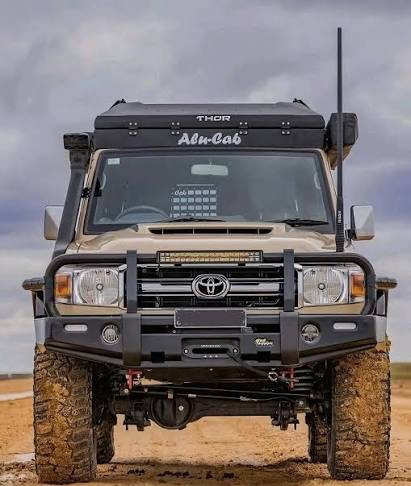

1
Decide where you want to go
Start with the places that matter most to you. Wildlife, landscapes, culture, beaches and remote areas can all lead to very different routes.
Explore Tanzania's parks →New to self-driving in Tanzania? Start here. This guide takes you through the major decisions — from choosing a vehicle and route to understanding roads, national parks, camping, costs and preparation.
A self-drive safari in Tanzania gives you the freedom to decide where to go, how long to stay and how much of the country you want to experience on your own terms.
But Tanzania is a large country, and a safari route can involve long distances, changing road conditions, remote areas and different rules inside protected areas.
Before booking anything, it helps to understand the basic decisions involved in planning a Tanzania self-drive trip. This guide gives you a starting point and then takes you deeper into each subject.
You don't need every detail figured out on day one. Work through these decisions in order and the rest of your trip becomes easier to build.
Start with the places that matter most to you. Wildlife, landscapes, culture, beaches and remote areas can all lead to very different routes.
Explore Tanzania's parks →Your available time should shape the route. Avoid trying to cover too much simply because destinations look close on a map.
Explore self-drive routes →Learn what driving in Tanzania is actually like, including road surfaces, distances, navigation, fuel and conditions you may encounter.
Read the driving guide →A suitable vehicle depends on your route, number of travelers, luggage, camping plans and the roads you expect to use.
Understand vehicle preparation →Look beyond the rental price. Fuel, park fees, camping, accommodation and other journey costs all contribute to the overall budget.
Explore Tanzania self-drive costs →Documents, navigation, communication, emergency preparation and practical equipment are all worth considering before you leave.
Before you drive →
One of the easiest mistakes when planning a Tanzania self-drive safari is trying to fit too many destinations into one itinerary.
A route that looks manageable on a map can involve much longer driving days once road conditions, wildlife areas and stops are taken into account.
Start with your available days, then decide how much driving you actually want to do.
Once you understand the basic planning process, use these guides to research the details of your Tanzania self-drive safari.
Driving rules, roads, navigation, fuel and practical information for international travelers.
Read the guide →Learn about the main parks and what to consider when visiting them on a self-drive safari.
Explore the parks →Compare different routes and learn how to build an itinerary around your available time.
Explore routes →Understand the major expenses involved in planning a self-drive safari in Tanzania.
See the costs →Learn about camping options, equipment and the practical side of camping during a self-drive safari.
Explore camping →Prepare your documents, navigation, communication and vehicle before starting your journey.
Prepare for the road →Your exact preparation will depend on your route and travel style, but these are useful areas to think through before setting off.